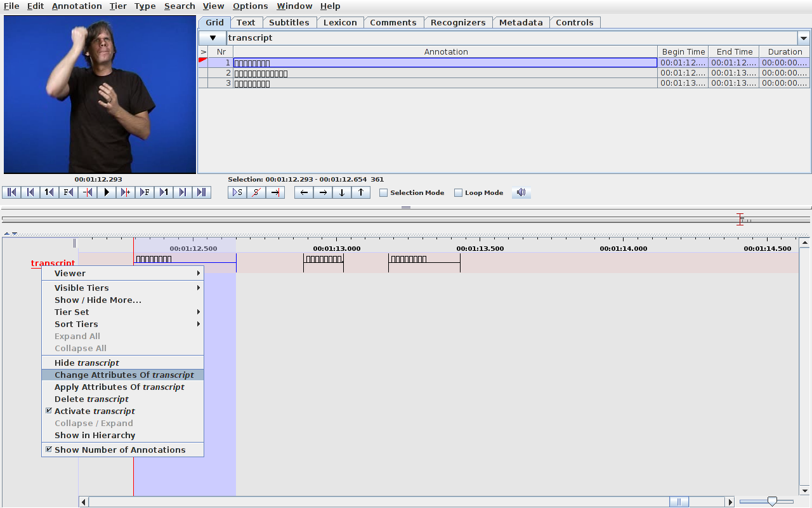
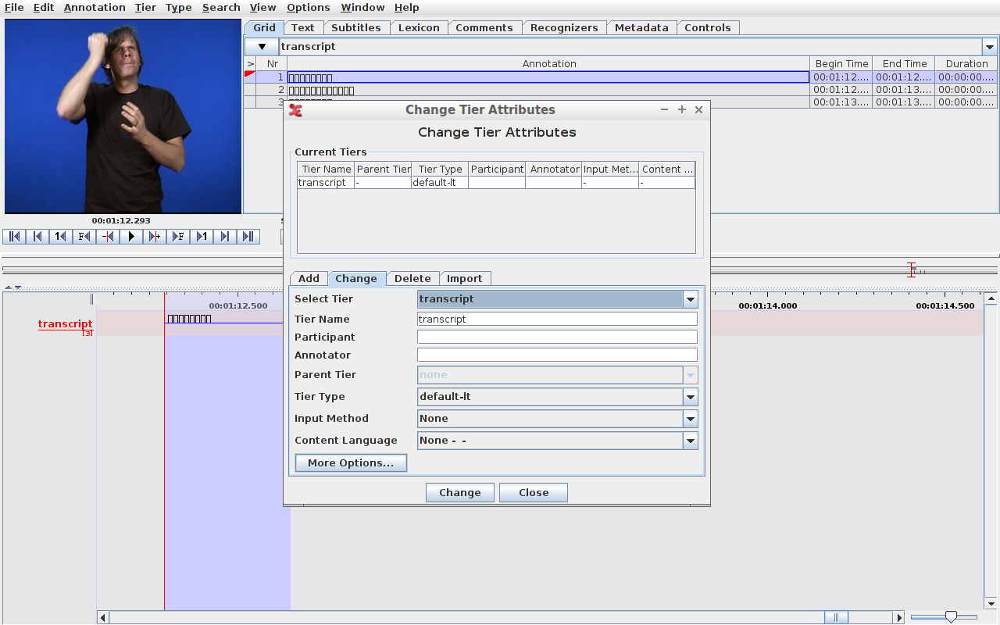
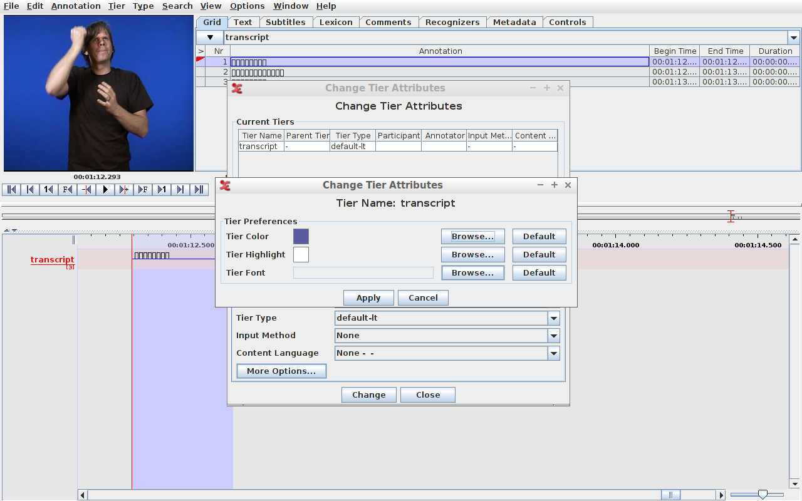
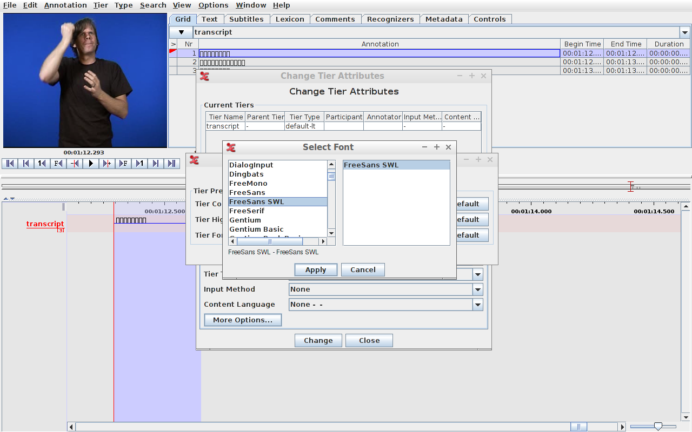
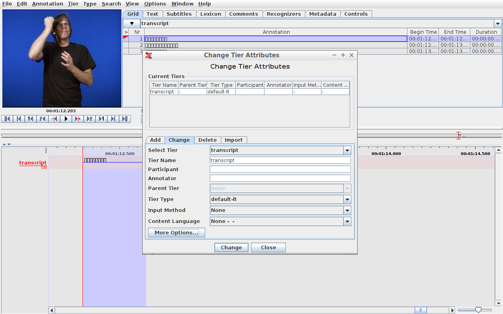
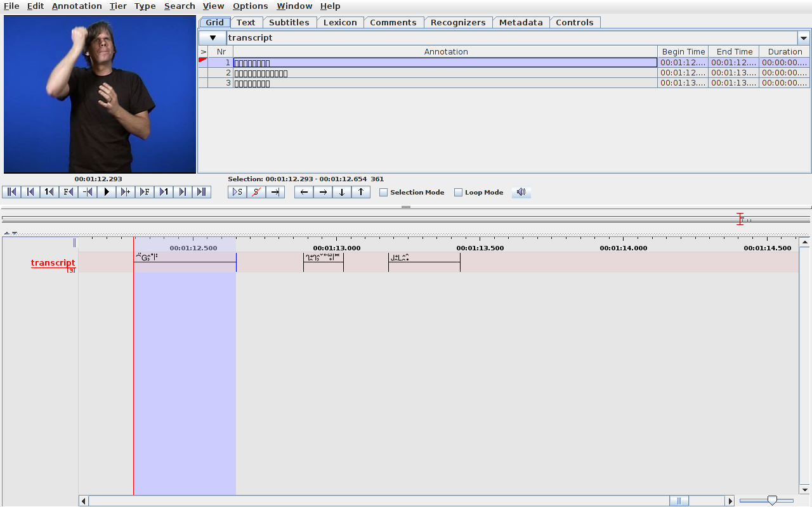
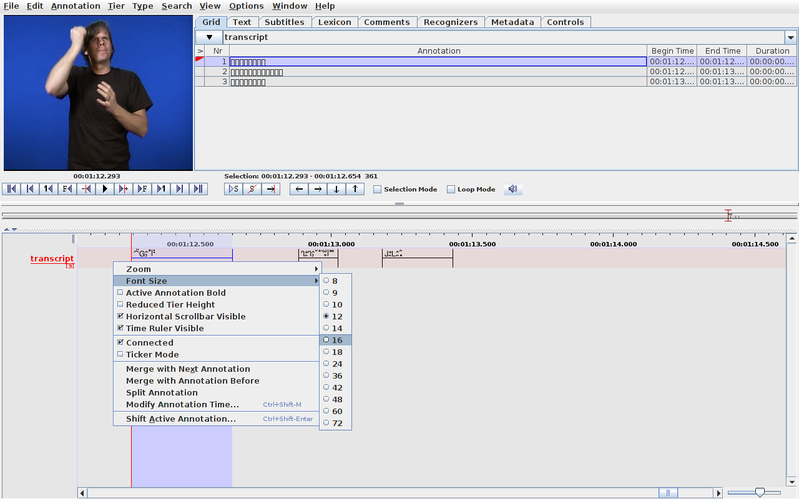
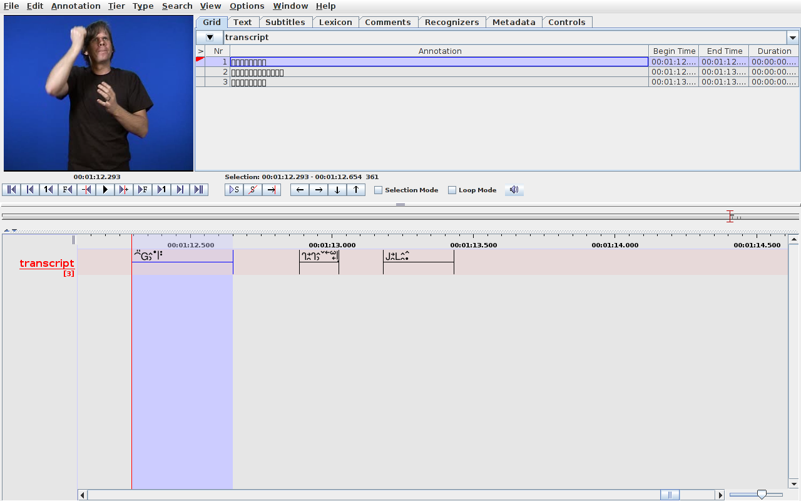

FreeSans-SWL: Ett typsnitt för transkription av svenskt teckenspråk
FreeSans-SWL är ett Unicode-kompatibelt sans-serif-typsnitt för transkription av svenskt teckenspråk. Det är en variant av GNU FreeSans med de symboler som behövs för att transkribera svenskt teckenspråk tillagda. (De tillagda symbolerna är formgivna i en stil som passar in i typsnittet i övrigt.) Detta innebär att du kan använda samma typsnitt för både text och transkriptioner.
Transkriptionssymbolerna är de som beskrivs i Teckentranskription (2015, FOT XXV, Björkstrand och Bergman), med ytterligare symboler hämtade från andra källor (t.ex. finns och med eftersom de används i Svenskt teckenspråkslexikon).
”SWL” är ISO
639-3-förkortningen för ”svenskt teckenspråk”.
Det enklaste sättet att använda typsnittet är att:
Om du vill använda FreeSans-SWL på en webbsida, så är det enklaste
sättet att ladda ner ovanstående typsnitt i WOFF2-format och lägga det
tillsammans med dina HTML-filer på servern, och sedan lägga till följande
i din CSS. (Googla på ”web fonts” om du stöter på patrull.)
Ovanstående CSS använder FreeSans-SWL för hela webbsidan
(vilket funkar alldeles utmärkt, eftersom typsnittet innehåller de
vanliga bokstäverna + symbolerna för teckenskrift) men mer avancerade
CSS-lösningar är förstås också möjliga, dessa lämnas dock som en övning
till läsaren.
OBS! Inställningarna för typsnittet sparas inte i
samma fil som transkriptionen (.eaf-filen) utan i en
separat .pfsx-fil, vilket innebär att om du delar data med andra
så behöver du skicka med .pfsx-filen också.
I ELAN 5.1 kan man ställa in typsnittet för varje
enskild rad (tier). För att byta typsnitt på en rad (här
raden transcript) högerklickar du först på radnamnet:
Sedan väljer du Ändra attribute for transcript
(Change Attributes Of transcript) i kontextmenyn – ett
dialogfönster med titeln Ändra radattribut (Change Tier
Attributes) dyker upp:
Klicka på knappen Flera alternativ… (More Options…) – ett
nytt dialogfönster (med samma titel) dyker upp:
I raden som heter Radteckensnitt (Tier Font), klicka på
knappen Bläddra… (Browse…) – ytterligare ett dialogfönster,
denna gång med titeln Välj teckensnitt (Select Font), dyker
upp.
Välj typsnittet FreeSans-SWL i listan, och klicka
sedan Tillämpa (Apply) – typsnittsfönstret stängs.
Väl tillbaka i det senaste av de två Ändra
radattribut-fönstren, klicka Tillämpa (Apply) igen –
ytterligare ett Ändra radattribut-fönster kommer dyka upp, i
vilket du kan välja vilka rader typsnittet ska appliceras på. Det
förvalda alternativet ställer om typsnittet för den valda raden, vilket
är vad man vanligtvis vill.
Klicka Tillämpa (Apply) – detta kommer att stänga
både Tillämpa och Flera alternativ…-fönstren och ta dig
tillbaka till det allra första fönstret med titeln Ändra
radattribut (Change Tier Attributes).
Klicka på knappen Ändra (Apply) och
därefter Stäng (Close) för att slutligen byta typsnittet.
Om du tycker att typsnittet är för litet kan du högerklicka på raden
(men inte radens namn) – en kontextmeny poppar upp.
Välj teckenstorlek (Font Size) > 16 (eller
vilken storlek du nu föredrar) för att ändra storlek till något lite mer
trevligt för ögat.
Hur använda?
freesans-swl.ttf
(eller freesans-swl.woff2)
och installera det på din dator. (Klicka bara på länken, de flesta
datorer/operativsystem förstår att det är ett typsnitt och frågar dig
om du vill installera det.)
Stylesheet för webben
@font-face {
font-family: "FreeSans-SWL";
src: url("freesans-swl.woff2");
font-display: swap;
}
body { font-family: "FreeSans-SWL", "FreeSans", sans-serif; }
Byta typsnitt i ELAN









{kind=link}
{kind=link}
{kind=link}
{kind=link}
{kind=link}
{kind=link}
{kind=link}
{kind=link}